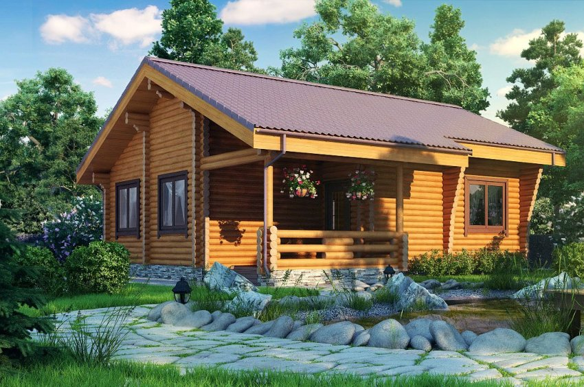

Sve gradimo sami. Kako izgraditi vlastitu kuću vlastitim rukama i kako to učiniti jeftinije
Izgradnja čvrste kuće vlastitim rukama, čak i bez iskustva u izgradnji, uopće nije mit. Unatoč činjenici da je samostalna gradnja kuće prilično problematičan posao, značajne uštede novac prisiljava mnoge ljude da se bave gradnjom bez sudjelovanja specijaliziranih organizacija, čija usluga često prelazi količinu potrošenu na kupnju materijala.
Izbor materijala
Koliko košta izgradnja čvrste kuće za prikaz vlastitim rukama i koji materijal koristiti? Brzina gradnje i konačni trošak kuće za izradu samog sebe prvenstveno ovise o odabranom materijalu.
Cigla
Ako trebate jeftino izgraditi kuću u kratkom vremenu vlastitim rukama, tada trebate odmah napustiti ciglu, budući da je skupa, zidanje zahtijeva posebne vještine, a za izgradnju građevine vlastitim rukama može vam trebati godina. U isto vrijeme, to je snažan i izdržljiv materijal koji je otporan na bilo kakve prirodne katastrofe, ne boji se vatre i ne zahtijeva nikakvo dodatno održavanje.
Kuća od opeke izgleda solidno, ali da biste izgradili vikendicu prikazanu na fotografiji, potrebni su vam profesionalci i skupi materijal:
Sendvič ploče
Ako govorimo o cijeni i brzini gradnje kuće, onda oni zauzimaju prvo mjesto. Ploča u obliku okvira - sastavljena kao konstruktor od gotovih ploča. Sastoje se od iverice, između kojih postoji izolacija - čvrsta polistirenska pjena ili poliuretanska pjena. Ploče su montirane na drveni ili metalni okvir.
Kuća izrađena od sendvič ploča ne zahtijeva dodatnu izolaciju, obložena je sporednom površinom ili se nanosi fasadna žbuka. Struktura je lagana, ne zahtijeva snažne temelje. Mnogi stručnjaci to tvrde drvena kuća može se sagraditi vlastitim rukama za 4-5 dana, ovisno o dostupnosti gotovog temelja.
Sendvič ploče mogu se izrađivati \u200b\u200bod različitih materijala. Ponekad se u njihovoj proizvodnji koriste smole štetne za ljudsko zdravlje, koje ispuštaju pare. To je možda jedini nedostatak koji se može izbjeći mukotrpnim odabirom materijala.
Na fotografiji je prikazana kuća od sendvič ploča, obložena sporednim kolosijekom:
Projektni i pripremni radovi
Bez obzira na to koji je materijal odabran za izgradnju kuće vlastitim rukama, potrebna je prisutnost projekta dogovorenog sa svim vlastima. Može se naručiti pojedinačni projekt uzimajući u obzir vlastite želje ili kupite gotove. U pravilu je preporučeni građevinski materijal već položen u njega, kao i njegova količina, tako da možete shvatiti koliko će koštati gradnja kuće već u fazi projektiranja.
Važno! Prije nego što započnete izgradnju privatne kuće vlastitim rukama, morate očistiti zemljište, uklanjajući što je više moguće svu vegetaciju na mjestu gdje će biti postavljen temelj. Ako površina ima očite nepravilnosti ili ozbiljan nagib, preporučuje se izravnavanje pomoću posebne opreme.
Uređaj za temeljenje
Prilikom gradnje privatnih kuća vlastitim rukama, a posebno laganim jeftinim strukturama, najpopularnija je trakast temelj... Radna snaga i troškovi takve zaklade su minimalni. Istovremeno, visokokvalitetni tračni temelj nije niži u snazi \u200b\u200bu odnosu na druge vrste masivnijih i težih konstrukcija.
Za izgradnju baze potrebno je izvršiti označavanje - jednu od najvažnijih faza, jer će daljnja gradnja ovisiti o njegovoj kvaliteti. Da biste to učinili, trebate uzeti 4 klinova, s kojima će biti označeni kutovi strukture. Umetnite jednu šipku, izmjerite širinu od nje i umetnite drugu - da označite duljinu. Rezultat bi trebao biti pravokutnik ili kvadrat (ovisno o projektu). Kutovi moraju biti ravni. To se može potvrditi povlačenjem konopa između suprotnih točaka na dijagonali. Ako su jednake, označavanje je točno. Ako dođe do odstupanja, preuredite redove dok ne dobijete željeni rezultat.
Nadalje, duž obilježenog oboda iskopava se jama široka 30-50 centimetara, a dubina se izračunava na temelju opterećenja i razine smrzavanja tla, tako da ovaj pokazatelj može biti od 0,7 do 1,7 metara.
Pijesak i šljunak izlijevaju se na dno i zbijaju. Nakon toga se postavlja oplata, čiji su zidovi prekriveni slojem krovnog materijala. Unutarnja se armaturna mreža izrađuje radi dobivanja potrebne krutosti baze. Ugradnja temelja završava se ulijevanjem u oplate betonska mješavina... Potrebno je oko 30 dana da beton dobije čvrstoću marke, ali nakon 7-10 dana možete započeti s izgradnjom zidova.
Ugradnja zidova
Ako se blokovi od pjene koriste kao glavni materijal za izgradnju jeftine kuće vlastitim rukama, tada se njihovo polaganje vrši nazubljenom lopaticom i posebnim ljepilom. Vrlo je važno pravilno postaviti prvi red, pa se instalacija svakog bloka mora provjeriti pomoću razine. Korak po korak za polaganje blokova:
- Položite hidroizolacijsku membranu na gotov temelj.
- Podmažite blok sa strana i dna ljepilom pripremljenim u skladu s priloženim uputama.
- Zalijepite blok na temelj i provjerite instalaciju s razinom.
Nakon što je prvi red položen, treba napraviti pojačanje. Da biste to učinili, na površini bloka duž cijelog perimetra kuće izrezane su dvije paralelne žljebove u koje se postavljaju armaturne šipke i pričvršćuju ljepilom. Ponovite pojačanje svaka 4 reda. Drugi sloj je složen s pomaknutim uzorkom u šablonu.
Ako je izbor pao na okvirnu kuću izrađenu od sendvič ploča, tada je gradnja zidova još jednostavnija:
- Na temelj se pričvršćuje traka za vezanje, a na njemu se uz pomoć samoreznih vijaka postavlja "krevet" - vodilna ploča sa posebnim utorima za ploču.
- Počevši od ugla, instalirane su dvije ploče koje moraju tvoriti točno pravi kut. Prije ugradnje, donji utor je pjenast i umetnut u udubljenje vodeće ploče, pričvršćujući se samoreznim vijcima.
- Ploče su međusobno povezane četvrtastom šipkom ili bez nje odmah čvrsto međusobno. Žljebovi su pjenasti, a čvrsto pritisnuti dijelovi pričvršćeni su samoreznim vijcima.
Sve ostale ploče su pričvršćene na isti način. Nakon ugradnje svih dijelova konstrukcije, na gornjem dijelu je pričvršćena traka za vezanje, na koju su spojene podne grede. Zidove kuće vlastitim rukama na ovaj način možete vrlo pažljivo izgraditi.
Krovni uređaj
Nakon što su zidovi spremni, možete izgraditi krov kuće vlastitim rukama. Preporuča se ugraditi nagibnu strukturu, jer je praktičnija za upotrebu. Zahvaljujući padinama, oborine se ne zadržavaju na površini gornjeg dijela kuće, što sprječava da teče. Montaža krova sastoji se od sljedećih koraka:
- Ugradnja Mauerlata temelj je gornjeg dijela kuće, a to je drvena šipka pričvršćena na gornji dio paralelnih zidova kuće.
- Proces instalacije rafter sustava ovisi o tome značajke dizajna krov koji može biti dvosatni ili četverosoban.
- Na šipkama se izrađuje sanduk, što je osnova za pričvršćivanje krovišta.
- Između letvica i krova postavlja se hidroizolacijska membrana.
Završna faza
Kad je krov postavljen, izgradnja kuće je gotovo gotova. Preostaje još nekoliko završnih radova:
- ugradnja prozora i vrata;
- ugradnja poda, pregrada i unutarnjeg uređenja;
- okretanje ili oslikavanje fasade;
- veza komunikacija.
Izgradnja kuće ili vikendice vlastitim rukama oduzima malo vremena i jeftina je ako koristite moderne materijale i djelujete u fazama. A posebno brzi majstori moći će sagraditi kuću vlastitim rukama u samo 4 dana.
Glavne prednosti okvirne kuće s ploča možete pogledati video:
2018-04-13


Iz ovog članka možete naučiti kako izgraditi vlastitu kuću vlastitim rukama uz minimalne troškove i odabrati najbolji materijal za to. Tekst opisuje mogući načini ušteda i savjet kako izbjeći pogreške tijekom rada. U članku su razmatrane značajke projekata na temelju okvirna tehnologija, opeka, drvo, plinski blokovi i drugi materijali, kao i učinkovitost svakog od njih.
Gradnja kuće od nule uvijek je u pratnji visoki troškovi... Ne može svaki vlasnik prigradskog područja priuštiti provedbu takvog projekta, ne obazirući se na brojke u procjeni. U većini slučajeva morate se baviti izgradnjom jeftine kuće vlastitim rukama kako biste se ugurali u proračun. No, pribjegavajući uštedama, morate jasno razumjeti u kojim će slučajevima to biti razumno, jer će kasnije vlasnik i njegova obitelj morati živjeti u ovoj zgradi.
Koju kuću je jeftinije graditi: izbor ekonomičnog projekta
Ušteda započinje racionalnom raspodjelom sredstava i pravilnim izborom projekta. Što su složeniji oblik i arhitektura zgrade, to će biti veći troškovi.
Nakon odabira prikladnog projekta, kuću možete izgraditi jeftino i brzo, ali za to morate uzeti u obzir sljedeće nijanse:
- Jednostavni raspored i shema izgradnje.
- Minimalna količina prostora.
- Optimalni materijali.
- Uporaba neuobičajene oplate.
- Ispravan pristup radu na zemlji.
Važno! Pri gradnji skupog projekta ne biste trebali štedjeti na kvaliteti materijala ili tehničkom nadzoru. Bolje je ograničiti svoj izbor na malu zgradu s običnim krovom i bez složenih arhitektonskih elemenata, tada nećete morati pribjeći rezanju troškova.
Odabirom projekta s minimalnim brojem arhitektonskih oblika, možete povećati svoje šanse za uklapanje u proračun s ograničenim proračunom. Da biste razvili optimalni izgled kuće, prostor trebate pametno iskoristiti. 11 m² dovoljno je za jednu osobu. Pomnoženje ovog pokazatelja s brojem članova obitelji i zbrajanje soba rezultatu opća namjena i sanitarni čvor, možete dobiti optimalnu kuću u svakom pogledu.
Bez obzira koliko je tlo teško na mjestu, za kupnju kuće morate kupiti prikladne materijale. Kad birate što ćete graditi kuću, ne biste trebali težiti maksimalnim uštedama na štetu kvalitete. Isto se odnosi na usluge stručnjaka angažiranih za obavljanje poslova koje se ne mogu obavljati vlastitim rukama, ili pripremu dokumentacije s odgovarajućim dozvolama. Ako uzmete lagane materijale, možete smanjiti opterećenje temelja i izgraditi pojednostavljeni temelj.
Značajne uštede mogu se postići primjenom nestandardne konstrukcije oplate. Istodobno, vrlo je nepoželjno smanjiti troškove cementa. Stupanj materijala mora biti kvalitetan, inače će doći do preranog uništavanja konstrukcije.
Izračunavanjem ispravne razine prodora prema masi zgrade, možete spriječiti ozbiljno skupljanje kuće. To će smanjiti rizik od pukotina i drugih oštećenja, što bi u budućnosti moglo zahtijevati ozbiljne troškove popravka.
Kako izgraditi kuću vlastitim rukama: foto-projekti iz različitih materijala
Ako će se izgradnja obaviti ručno, potreban je pogrešan izračun troškova - prethodno proračun. Najekonomičnija i najbrža metoda gradnje je tehnologija okvira. Takve su strukture stabilne, praktične i ne podliježu promjenama deformacija. Životni vijek kuća izgrađenih pomoću tehnologije okvira je oko 75 godina. Međutim, nema ograničenja za upotrebu obloge.
Vrijeme izgradnje kuće vlastitim rukama pomoću tehnologije okvira obično traje nekoliko mjeseci. U nekim se slučajevima možete ograničiti na nekoliko tjedana.
Postoje dvije vrste žičnih okvira:
- Ploča.
- Štit.
Bilješka! Izgraditi jeftina kuća upotreba tehnologije okvira moguća je ako duljina zgrade ne prelazi 20 m, a ne postoje više od 3 kata. U drugim će slučajevima takav projekt biti skup.
Tehnologija okvira-panela omogućuje vam izgradnju vlastitim rukama. Ovaj se postupak sastoji od sljedećih koraka:
- izrada okvira od drveta;
- polaganje hidroizolacije i izolacije;
- ugradnja ploča kao obloge.
U ovom se slučaju brzina gradnje zgrade znatno smanjuje, jer je svaki element montiran zasebno.
Tehnologija okvira na ploči ne zahtijeva mnogo napora, pouzdana je, ali prate je veći troškovi od prethodne verzije. Ova metoda uključuje izgradnju kuće na temelju gotovih ploča ploča tvorničke proizvodnje. Vlasnik prigradsko područje preostaje samo pravilno sastaviti sve strukturne elemente
Kad se odlučuje iz čega graditi jeftinu i visokokvalitetnu kuću, u većini slučajeva programeri preferiraju sljedeće materijale:
- cigla;
- drvena greda;
- plinske blokove.
Na temelju ovih materijala možete stvoriti lijep i udoban dom vlastitim rukama. U svakom slučaju, izgradnja će imati određene prednosti i nedostatke.
Okvirna tehnologija: ono što je jeftino i visokokvalitetno za izgradnju kuće, prednosti i nedostatke
Koristeći tehnologiju okvira, vlasnik ljetne kućice bavi se i prednostima i nedostacima ove metode.
Pozitivna strana ove metode je sljedeća:
- Učinkovitost - tehnologija vam omogućuje da napravite jeftino kućište vlastitim rukama.
- Mala težina konstrukcije - zbog toga se temeljni dio zgrade može pojednostaviti.
- Velika brzina gradnje.
- Nema skupljanja - zidovi ne podliježu promjenama deformacija.
- Zidovi zadržavaju toplinu, tako da postaje moguće smanjiti troškove grijanja.
Zagrijavanje okvirnih kuća događa se prilično brzo. Budući da su zidovi izrađeni od materijala niske toplinske vodljivosti, gubitak topline je minimalan.
Nema mnogo nedostataka u tehnologiji okvira. Ova metoda zahtijeva barem minimalno iskustvo u gradnji, pa je prije početka radova poželjno dobiti stručni savjet, upoznati se s tehničkim podacima i pogledati vizualne video pregleda. Samo će u ovom slučaju ekonomična primjena okvira tehnologije biti ekonomski opravdana.
Osim toga, drvo je potrebno impregnirati, tako da ćete morati dodatno kupiti posebna sredstva koja pružaju zaštitu od utjecaja negativnih čimbenika:
- vatra;
- kukci;
- voda itd.
Bilješka! Preporučljivo je osigurati dobar sustav ventilacije u kući. To se posebno odnosi na zgrade s nekoliko katova.
Kuću možete jeftino izgraditi pomoću tehnologije okvira od drveta ili metala. U prvom slučaju, materijal ne čini zgradu težom, zidovi takve kuće dišu i održavaju optimalne klimatske uvjete. Ako koristite metal, lagani toplinski profil idealan je za izgradnju.
Vezani članak:
Razvrstavanje, sastavni materijali, tehnološki parametri i dimenzije. Karakteristike, omjer cijene i kvalitete.
Prednosti termoprofila:
- potpuna sigurnost od požara;
- nema potrebe koristiti biološku zaštitu;
- lagana težina.
Metal je na mnogo načina puno bolji od drveta, ali vrlo je važno pratiti njegovo stanje i pružiti zaštitu od korozije. Iz onoga što je jeftinije graditi kuću, svaki vlasnik web mjesta odlučuje za sebe, iako treba imati na umu da je vijek trajanja metalnog profila mnogo duži od drva. Kao podlogu možete koristiti plitku traku, hrpu ili ploču od temelja.
Značajke izgradnje kuće od opeke vlastitim rukama
Cigla se smatra jednim od najpopularnijih materijala koji se koristi za izgradnju privatnih i seoske kuće... Međutim, nije baš pogodan za one koji žele smanjiti vrijeme izgradnje i ograničiti se na minimalne troškove.
Nedostaci izgradnje zidanih opeka:
- potreba za vrlo debelim zidnim pločama;
- formacija zidanje traje puno vremena;
- zgrada se smanjuje;
- potrebna je smjesa za učvršćivanje opeka;
- velika građevinska težina, koja zahtijeva snažan i pouzdan temelj.
U ovom slučaju uštede su nemoguće, jer će se baza morati zakopati do točke smrzavanja tla, angažirati stručnjake za to ili unajmiti opremu. Stoga, kad birate od čega jeftino graditi kuću, ne biste trebali koristiti ciglu, koja je pogodnija za stvaranje čvrstih i izdržljivih zgrada.
Dugotrajni i naporni radovi na postavljanju zidova važan su nedostatak u gradnji
Prednosti konstrukcije od opeke očituju se u sljedećim slučajevima:
- izgradnja kuće provodi se "stoljećima";
- mjesto ima prikladne parametre tla i potrebnu razinu vodonosnika;
- vlasnik je dovoljno iskusan da sve poslove obavlja samostalno;
- programer ima dovoljno vremena.
Ako su svi gore navedeni uvjeti ispunjeni, troškovi izgradnje kuće bit će opravdani.
Značajke izgradnje jeftine kuće od plinskih blokova
Plinski blokovi idealni su za izgradnju ekonomične kuće. Ovi elementi dolaze u širokom rasponu veličina i oblika. Tehnologija rada s njima vrlo je jednostavna, pa gradnju kuće možete jednostavno napraviti vlastitim rukama.

Ne treba izolaciju
Prednosti upotrebe plinskih blokova:
- sposobnost smanjenja debljine zidova bez žrtvovanja uštede energije;
- lagana zgrada i mogućnost uštede na temelju;
- izdržljivost;
- praktičnost;
- visoka razina zvučne izolacije.
Bilješka! Kuća izrađena od plinskih blokova ima svoje karakteristike, tako da ćete morati pažljivo odabrati završnicu i izvesti visokokvalitetne hidroizolacijske radove.
Izgraditi kuću na temelju plinskih blokova korisno je iz mnogo više razloga. Takve zgrade praktički ne podliježu skupljanju. Za rad će biti potrebna kupnja posebnog ljepila, ali vrijeme izgradnje je smanjeno na minimum, a potrošnja otopine za pričvršćivanje smanjena je za tri puta.
Kako brzo i jeftino izgraditi kuću iz bara vlastitim rukama
Izgraditi drvena kuća puno isplativije od postavljanja zgrade na bazi gaziranog betona ili opeke. Ova je tehnologija jednostavnija i pristupačnija. Stanovanje od drveta je vrlo toplo. Ako slijedite sve zahtjeve, takva će se struktura pokazati dovoljno jakom i dugo će stajati.
Za izgradnju je bolje uzeti šipku s veličinom presjeka od 200 mm. Trebat će vam i sloj izolacije debljine najmanje 100 mm. Zidovi su prekriveni žbukom od 2-3 cm. Rezultat je isplativ, atraktivna kućačiji će radni vijek biti nekoliko desetaka godina.
Kada, trebate obratiti pozornost na kvalitetu materijala
Koje su prednosti gradnje kuće vlastitim rukama od drveta:
- Sav posao možete obaviti vlastitim rukama.
- Niski troškovi materijala.
- Visoka razina toplinske izolacije.
- Kratko vrijeme izgradnje.
- Lagana zgrada.
Drvo je savršeno za izgradnju jeftine kuće kao alternative blokovima i opekama. Međutim, morat ćete pažljivo proučiti značajke ovog postupka.

Važna prednost gradnje su njeni jeftini troškovi.
Što je jeftinije graditi kuću: brzi pregled cijena
Prilikom odabira materijala za jeftinu i brzu gradnju potrebno je uzeti u obzir neke čimbenike:
- značajke tla;
- specifičnost projekta;
- uvjeti koje ima gradilište.
Također treba imati na umu da je najskuplji dio plaćanje usluga radnika, pa se mnogi vlasnici zemljišta zanima kako brzo samostalno izgraditi kuću.
Prosječne cijene za izgradnju kuća:
| Tip zgrade | Cijena, rub./m² |
| Wireframe | 890 |
| Iz šanka | 1950 |
| Od gaziranog betona | 2000 |
| Cigla | 2350 |
Ako ne uzmete u obzir značajke mjesta, tablica pokazuje da je najekonomičnija zgrada kuća sagrađena pomoću tehnologije okvira.
Bilješka! Cijene u tablici temelje se na prosječnim pokazateljima: razina smrzavanja tla je 1,5 m, podzemna voda je na dubini od 2,5 m.
Kako sagraditi kuću vlastitim rukama: opis tehnologije
Prije nego što započnete posao na poboljšanju kuće na vlastitom mjestu, trebali biste odrediti redoslijed rada.
Glavne faze izgradnje:
- Izrada temelja.
- Napravite okvir.
- Postavljanje komunikacijskih sustava (struja i voda).
- Ugradnja podova.
- Raspored krova.
- Završni radovi.
Reljef zaklade je najviše učinkovita metoda smanjenje troškova. Djeluje pod uvjetom da se za izgradnju zidova odabere lagani materijal. Ako se koristi pilotski, pločasti ili plitki temelj, temelj se postavlja na razini 0,5 m. Nakon toga se izvode hidroizolacijski radovi.
Kako izgraditi kuću sami: izrada kutije
Da biste saznali koliko materijala je potrebno za izgradnju kutije, treba koristiti posebnu formulu. To zahtijeva ukupna površina zgrada, koja se mjeri u m 3, podijeljeno s količinom komadnog materijala sadržanog u 1 m 3.
Ako želite gradnju učiniti što ekonomičnijom, ne smijete koristiti opeku, drugi materijali su prikladni za ove svrhe:
- adobe;
- pjenasti beton;
- gazirani beton;
- drvo;
- školjka.
Od svih nabrojanih materijala, ljuskava stijena može ponuditi najviše vrijednosti propusnosti pare. To omogućuje smanjenje troškova organizacije toplinske izolacije, ali u ovom slučaju je potrebna dobra hidroizolacija. U kući s školjkama obavezno je ojačati otvore vrata i prozora. Za to možete koristiti metalne kutove.
Kako izgraditi kuću vlastitim rukama: pomoću izolacije
Kada je građevinski okvir spreman, rade se radovi na njegovoj izolaciji. Najpouzdaniji i dokazani materijali su staklena vuna i mineralna vuna. Ne biste trebali štedjeti na količini i kvaliteti valjaka, jer što se temeljitije izvodi rad usmjeren na izolaciju, to će biti niži troškovi grijanja kuće u budućnosti. Postoji još jedna pozitivna značajka - vijek trajanja zgrade povećava se, dok se potreba za obnavljanjem i popravkom zgrade neće pojaviti uskoro.
Za izradu unutarnjih pregrada u kutiji prikladan je suhozid. Listovi ovog materijala su pristupačni i omogućuju vam stvaranje laganih konstrukcija bilo kojeg oblika, a da pritom održavate visoku čvrstoću.
Upotreba metalnog profila ojačat će zidove. Ti se elementi lako učvršćuju i obložavaju listovima gips kartona. Takav rad ne zahtijeva velike troškove i provodi se vrlo brzo.

Kako izgraditi kuću vlastitim rukama: organizacija grijanja, vodovoda i kanalizacije
Plinski kotao prikladan je kao oprema za grijanje privatne kuće. Dopuštena je upotreba peći i kruga vode. Naravno, rad štednjaka popraćen je određenim poteškoćama, ali omogućuje vam uštedu novca, za razliku od grijanja na plin.
Korisni savjet! Solarni paneli - lijepi alternativna opcija grijanje. Međutim, pogodan je samo za regije s puno sunčanih dana.
Pri organiziranju vodoopskrbnih i kanalizacijskih sustava, bolje je dati prednost sustavima, jer su ekonomični. Za bušenje bušotine potrebni su odgovarajući uvjeti, sam postupak je prilično jednostavan. Istovremeno, vlasnik stranice prima stalnu opskrbu vodom u kuću, bez obzira na centralizirane sustave.
Da biste organizirali kanalizacijski sustav, možete izgraditi septičku jamu na mjestu. Dizajn će zahtijevati ispravnu ugradnju i odabir opreme, ali radovi će se izvoditi jednokratno. Visokokvalitetna septička jama omogućit će vam da na dugo vremena zaboravite na takav problem kao što su blokade u cijevima itd.
Kako brzo izgraditi kuću: rad na organizaciji podova i krovova
Izgradnja poda i krova može se izvesti i samostalno. U radu biste trebali koristiti drvene grede. Prvo je potrebno učvrstiti pojačani pojas oko cijelog oboda zgrade.
Da biste sagradili kuću vlastitim rukama uz minimalne troškove, bolje je koristiti materijale iz proračunskog segmenta za organiziranje krova:
- listovi od škriljevca;
- ondulin;
- profesionalni podovi;
Svi ovi materijali mogu se naći na policama trgovina u širokom asortimanu, tako da neće biti teško pronaći poklopac potrebne boje ili konfiguracije. Da bi se povećala čvrstoća pričvršćenja na krov, preporučuje se konstrukcija obloga. Dodatna izolacija cijele konstrukcije neće ometati. To će spriječiti istjecanje topline kroz krov. Staklena vuna je prikladna za to. Trska, drvo, slama mogu se koristiti kao ekološki prihvatljiv materijal za krov.
Kako sami izgraditi kuću: tehnologija poda
Betonski podovi su najprostija opcija. Da biste to učinili, morate organizirati estrih i sve napuniti cementnim mortom. Ostaje samo izolirati bazu i izvršiti završnu obradu.
Tehnologija betonskih podova:
- čišćenje baze od krhotina i prašine;
- posteljina od gline kao hidroizolacijski sloj;
- stvaranje pijeska i šljunka;
- polaganje hidroizolacije;
- ugradnja toplinski izolacijskog materijala (pjena, bazaltna vuna, ekspandirani polistiren ili ekspandirana glina);
- pojačanje metalnim šipkama ili mrežom;
- ugradnja vodilica;
- priprema i punjenje otopine;
- poravnanje.
Korisni savjet! Ako je estrih izveden na gornjim katovima, potrebno je izvršiti dodatno pojačanje poda.

Kako izgraditi kuću jeftino: unutarnja dekoracija prostora
Unutarnja dekoracija prostora ovisi o mašti i proračunskim mogućnostima vlasnika. Kao završni materijal pogodno za pod:
- pločica;
- laminat;
- linolej itd.
Pločica se smatra najpraktičnijom i otpornijom na mehanička oštećenja. Lako se čisti, a zbog korištenja sustava "Topli pod" takav završetak neće biti hladan.
Pomoću rastezljivih stropova možete vizualno proširiti unutarnji prostor mala kuća... Sjajna površina stvara prekrasan dekorativni učinak reflektirajući svjetlost. Takvi strukturni elementi kao otvori, niše, lukovi postat će prekrasan ukras interijera. Za proizvodnju ovih dijelova, bolje je koristiti metalne profile i listove suhozida.
Za završnu obradu zidnih površina možete koristiti sljedeće materijale:
- tapete za slikanje;
- ukrasna žbuka;
- drvo.
O tehnički nadzor, onda je bolje uključiti iskusnog graditelja ili inženjera u rješavanje ovog problema, jer niti jedan članak ili videozapis ne mogu vam pomoći u potpunosti razumjeti značajke ovog postupka. Također, ne štedite na komunikacijskim sustavima, prikladnom pristupu dvorištu i drugim točkama koje pružaju udobnost. Povjeravanje razvoja projekta profesionalcima, vrlo je važno dobiti mišljenje različitih stručnjaka. Djelovanje radnika i dizajnera mora biti koordinirano.
Na temelju podataka navedenih u članku, možete doći do zaključka da je sasvim moguće izgraditi kuću vlastitim rukama bez iskustva u gradnji. Da biste to učinili, morat ćete unaprijed izračunati troškove i potrebnu količinu materijala, proučiti tehnologiju i sastaviti plan rada, kao i rasporediti vrijeme u svom rasporedu. Ostalo ovisi o naporima i predanosti.
Kako sagraditi vlastitu kuću vlastitim rukama: video- tehnološki pregled
Izradite sami kuću izgradnju uvijek treba započeti s pažljivom pripremom. Prije svega, morate provesti neke aktivnosti koje nisu povezane s gradnjom (međutim, bez njih, izgradnja kuće neće započeti). Za početak, trebali biste ih sastaviti. zadatak dizajna kuće i izgled stranice ... Tada se razvija / kupuje projekt - ne samo same kuće, već i susjednih zgrada. Nakon toga sastavljaju se i odobravaju sve dozvole za građevinske radove.
Na bilješku! Ako se uređenje vrta planira na mjestu, tada je preporučljivo saditi stabla prije svega tako da ona rastu i sazrijevaju tijekom procesa izgradnje.

1. faza "Nula"
Temelj se gradi, kao i "prizemlje" (drugim riječima, podrum, pod uvjetom da je projektom to predviđeno). Prvo morate odlučiti koji temelj odabrati za kuću... Sam proces izgledat će otprilike ovako:
- uklanja se plodni sloj tla na odabranom mjestu;
- iskopava se temeljna jama (ovdje sve ovisi o određenoj vrsti građevine - to možete, primjerice, učiniti) temelj na vijaka-hrpama); ako nije predviđen podrum, jama se može iskopati ručno, iako lakše je i brže koristiti posebnu opremu u ovome;
- sve potrebne komunikacije su postavljene ispod temelja (ako jesu ploča, onda se preporučuje opremanje ispod njega drenaža i pomoćna kanalizacijska cijev za odvod);
- preostale praznine se popunjavaju (kao i podrum podruma, ako postoji takva soba).

2. faza Glavni radovi
Zidovi i međukatni stropovi se postavljaju, montiraju stube, unutarnje particije. Dalje u izgradnji tende i krov (čitaj o kako napraviti zabat s krovom vlastitim rukama). instalirani garažna vrata, vanjska vrata, prozori i još mnogo toga. Na kraju se proizvodi vanjski ukras kuće (pomoću žbuke, sporednih kolosijeka, ukrasnog kamena, obloga, okrenuta opekom itd.)
3. faza komunikacije
Ovo je vrlo važna faza izgradnje, koja se sastoji od isporuke svih potrebnih komunikacija i ugradnje inženjerske opreme. Posebno, dolazi oko:
- sistem grijanja;
- plin (ako je predviđen);
- ventilacijski sustav, klimatizacijski sustav (kao opcija - opskrba ventilacijom u privatnoj kući);
- alarm, sustav video nadzora, TV, Internet.
4. faza Uređenje interijera
U ovoj fazi gradnje izrađuju se stropovi (obojeni / pobijeljeni, spušteni ili zatezne strukture), zidovi se obrađuju (izravnavaju, zalijepe, lijepe tapetama itd.), ispunjavaju podni estrih (kada je riječ o betonskim podovima) polagaju se podne obloge. Pored toga, morate instalirati